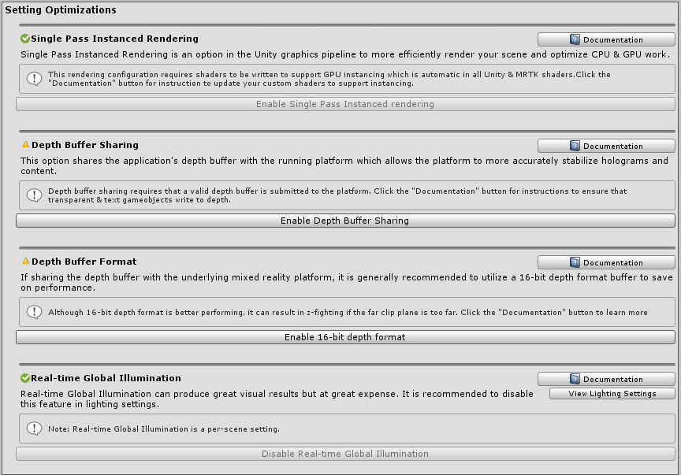
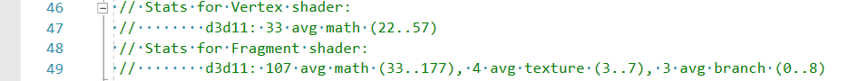
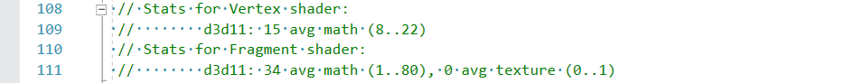

性能
入门
使性能合理化的最简单方法是通过帧速率或应用程序每秒可以渲染图像的次数。如目标平台所概述的那样，达到目标帧速率很重要（即Windows混合现实, Oculus, 等).例如，在HoloLens上，目标帧速率为60 FPS。低帧率应用程序可能会导致用户体验恶化，例如恶化全息图稳定，世界跟踪，手部跟踪等。为了帮助开发人员跟踪并获得高质量的帧速率，混合现实工具包提供了各种工具和脚本。
可视分析器
为了在开发的整个生命周期中不断跟踪性能，强烈建议在运行和调试应用程序时始终显示可视分析器。混合现实工具包提供了可视分析器 诊断工具，可在应用程序视图中提供有关当前FPS和内存使用情况的实时信息。可以通过在MRTK配置文件检查器 下方的诊断系统设置.
此外，与在Unity编辑器或仿真器中运行相比，在设备上运行时利用Visual Profiler跟踪帧速率尤为重要。在设备上运行时，将描述最准确的性能结果发布配置版本.
[!注意] 如果针对Windows Mixed Reality构建，请使用主配置版本

Optimize Window
MRTK Optimize Window 提供信息和自动化工具，以帮助混合现实开发人员设置环境以获得最佳性能，并确定场景和资源中的潜在瓶颈。Unity中的某些关键配置可以帮助为混合现实项目提供实质上更优化的结果。
通常，这些设置涉及适合混合现实的渲染配置。与传统的3D图形开发相比，混合现实应用程序是独特的，因为有两个屏幕（即两只眼睛）可以渲染整个场景。
通过使用MRTK优化窗口，可以在Unity项目中自动配置以下参考的建议设置。

建议的Unity设置
单遍实例渲染
Unity中XR的默认渲染配置为多遍. 此设置指示Unity执行两次整个渲染管道，每只眼睛执行一次。可以通过选择来优化单遍实例渲染 代替。此配置利用渲染目标数组 能够执行将实例插入适当的单个绘制调用渲染目标 为每只眼睛。此外，此模式允许所有渲染都在渲染管道的一次执行中完成。因此，选择Single Pass Instanced渲染作为混合现实应用程序的渲染路径可以在CPU和GPU上节省大量时间并且是推荐的渲染配置。 但是，为了对每只眼睛的每个网格发出单个绘制调用，GPU实例化 必须由所有着色器支持。实例化使GPU可以在两只眼睛之间多路复用绘图调用。Unity内置着色器以及MRTK标准着色器 默认情况下，在着色器代码中包含必要的实例化指令。如果为Unity编写自定义着色器，则可能需要更新这些着色器以支持Single Pass Instanced渲染。
自定义着色器的示例代码
struct appdata
{
float4 vertex : POSITION;
float2 uv : TEXCOORD0;
UNITY_VERTEX_INPUT_INSTANCE_ID //Insert
};
struct v2f
{
float2 uv : TEXCOORD0;
float4 vertex : SV_POSITION;
UNITY_VERTEX_OUTPUT_STEREO //Insert
};
v2f vert (appdata v)
{
v2f o;
UNITY_SETUP_INSTANCE_ID(v); //Insert
UNITY_INITIALIZE_OUTPUT(v2f, o); //Insert
UNITY_INITIALIZE_VERTEX_OUTPUT_STEREO(o); //Insert
o.vertex = UnityObjectToClipPos(v.vertex);
o.uv = v.uv;
return o;
}
质量设置
Unity提供预设以控制质量每个平台端点的渲染次数。这些预设控制可以启用图形功能，例如阴影，抗锯齿，全局照明等。建议降低这些设置并优化渲染期间执行的计算数量。
Step 1: 更新混合现实Unity项目以使用低质量级别设置
Edit > Project Settings, 然后选择 Quality category > Select Low Quality for the UWP Platform
Step 2: 对于每个Unity场景文件，禁用实时全局照明
Window > Rendering > Lighting Settings > Uncheck Real-time Global Illumination
Depth buffer sharing (HoloLens)
如果针对Windows Mixed Reality平台（尤其是HoloLens）进行开发，则在XR设置下启用深度缓冲区共享可以帮助您全息图稳定. 但是，深度缓冲区的处理可能会导致性能损失，特别是如果使用24位深度格式. 因此，强烈建议将深度缓冲区配置为16位精度。
如果 z-fighting 由于低位格式而发生，请确认 far clip plane将所有相机中的设置为该应用程序可能的最低值。默认情况下，Unity设置far clip plane为1000m。在HoloLens上，对于大多数应用场景，通常50m的far clip plane绰绰有余。
[!注意] 如果使用16位深度格式，则模板缓冲区所需的效果将不起作用，因为Unity不创建模板缓冲区 在这种情况下。相反，如果适用于端点图形平台，则选择24位深度格式通常会创建8位模板缓冲区。
如果使用Mask组件 需要模板缓冲区，请考虑使用RectMask2D 它不需要模板缓冲区，因此可以与16位深度格式一起使用。
[!注意] 为了快速确定场景中哪些对象没有可视地写入深度缓冲区，可以使用Render Depth Buffer utility 在“MRTK Configuration profile”配置文件中的Editor Settings下。
一般建议
对于混合现实开发人员而言，性能可能是一个模棱两可且不断变化的挑战，并且优化性能的知识范围非常广泛。但有一些一般性建议，以帮助您了解如何提高应用程序的性能。
将应用程序的执行简化为运行在CPU或GPU上的各个部分，从而确定应用程序是否受任一组件的约束，这很有用。可能存在跨越两个处理单元的瓶颈以及一些必须仔细研究的独特方案。但是，对于入门而言，最好掌握应用程序在最多时间执行的位置。
GPU限制
由于大多数混合现实应用程序平台都在利用立体渲染，由于呈现“双倍宽”屏幕的性质，被GPU限制非常常见。此外，移动混合现实平台（如HoloLens或Oculus Quest）将受到移动级CPU和GPU处理能力的限制。
当专注于GPU时，应用程序通常必须在两个重要阶段完成每一帧。
无需深入研究计算机图形学的复杂领域和渲染管线，每个着色器阶段都是一个在GPU上运行以产生以下内容的程序。
- 顶点着色器将网格顶点转换为屏幕空间中的坐标（即，每个顶点执行的代码）
- 像素着色器计算要为给定像素和网格片段绘制的颜色（即，每个像素执行代码）
关于性能调整，通常专注于优化像素着色器中的操作通常会更有成果。应用程序可能只需要绘制一个只有8个顶点的立方体。但是，立方体占用的屏幕空间可能约为数百万个像素。因此，如果减少像素着色器上的着色器代码数量少于顶点着色器，则减少10个操作可以节省大量工作。
这是利用这一优势的主要原因之一MRTK标准着色器 因为此着色器通常在像素和顶点上执行的指令要比Unity Standard着色器少得多，同时实现了可比的美学效果。
| CPU 优化 | GPU 优化 |
|---|---|
| 应用仿真逻辑 | 渲染操作 |
| 简化物理 | 减少照明计算 |
| 简化动画 | 减少多边形数量和可绘制对象的数量 |
| 管理垃圾收集 | 减少透明物体的数量 |
| 缓存引用 | 避免后期处理/全屏效果 |
Draw call实例化
Unity中降低性能的最常见错误之一是在运行时克隆材质。如果GameObjects共享相同的材质和/或相同的网格，则可以通过以下技术将其优化为单次绘制调用：静态批处理, 动态批处理和GPU实例化.但是，如果开发人员修改了渲染器的材质在运行时，Unity将创建分配材质的克隆副本。
例如，如果一个场景中有100个cube，则开发人员可能希望在运行时为其分配唯一的颜色。访问renderer.material.color在C＃中，它将使Unity在此特定渲染器/ GameObject的内存中创建新材质。100个立方体中的每个立方体都有其自己的材质，因此无法将它们合并到一个绘制调用中，而是将成为从CPU到GPU的100个绘制调用请求。
为了克服这一障碍并仍然为每个立方体分配唯一的颜色，开发人员应利用MaterialPropertyBlock .
private PropertyBlock m_PropertyBlock ;
private Renderer myRenderer;
private void Start()
{
myRenderer = GetComponent<Renderer>();
m_PropertyBlock = new MaterialPropertyBlock();
}
private void ChangeColor()
{
// 为此渲染器创建一个材质的副本
myRenderer.material.color = Color.red;
// vs.
// 保留渲染器的实例化功能
m_PropertyBlock.SetColor("_Color", Color.red);
myRenderer.SetPropertyBlock(m_PropertyBlock);
}
Unity性能工具
Unity提供了内置于编辑器中的出色性能工具。
如果估计一个着色器与另一个着色器之间的大致性能折衷，则编译每个着色器并查看每个着色器阶段的操作数很有用。可以通过选择一个着色器资源然后点击Compile and show code按钮。这将编译所有着色器变体，并使用结果打开Visual Studio。注意：根据使用给定着色器的材质启用的功能，所产生的统计结果可能会有所不同。Unity将仅编译当前项目中直接使用的着色器变体。
Unity 标准着色器统计信息示例

MRTK Standard shader statistics example
